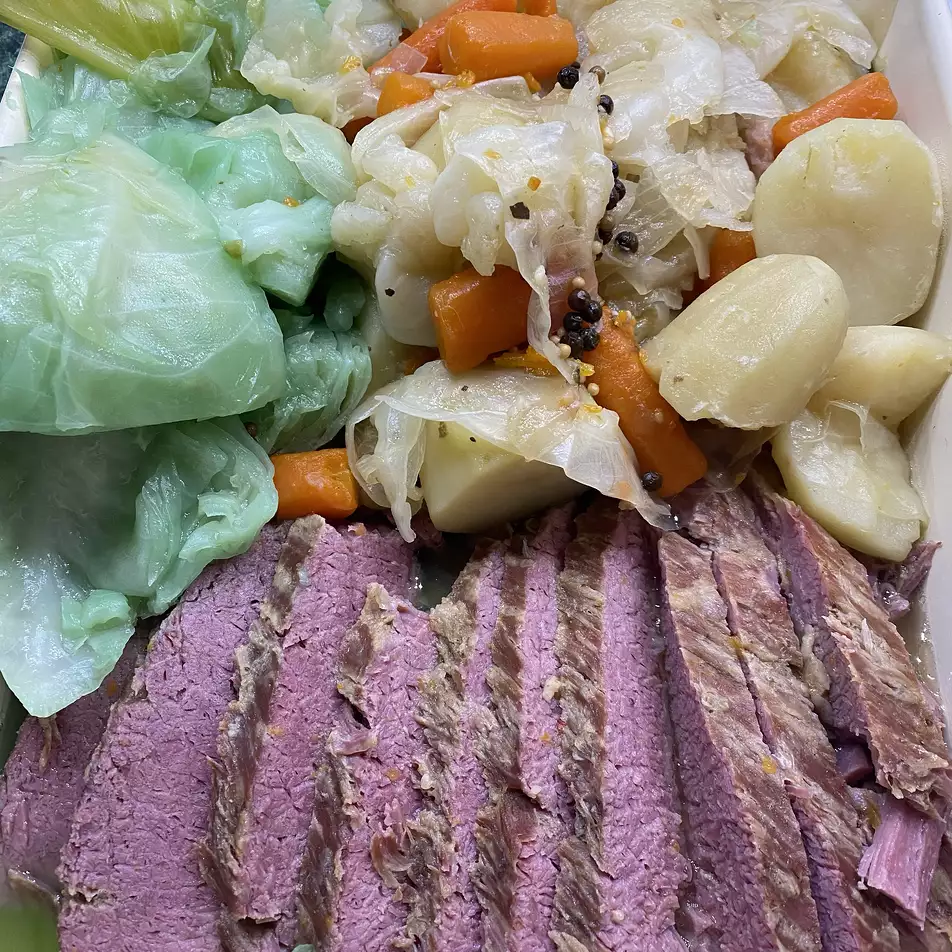

Corned Beef and Cabbage

Description
It's almost St. Patrick's Day, and for many that means boiling up a nice authentic Irish dinner of corned beef and cabbage. The original Irish recipe actually used a type of lean bacon, made with a cut of pork similar to Canadian bacon. Corned beef came into the picture as a lower-cost substitution, to replace the more expensive and harder to find cut.
Ingredients
- 1 (4 pound) corned beef brisket with spice packet
- 3 quarts water
- 1 onion, quartered
- 3 carrots, cut into large chunks
- 3 stalks celery, cut into 2-inch pieces
- 1 teaspoon salt
- 2 pounds red potatoes, halved
- 1 small head cabbage, cut into eighths
Steps
- Combine corned beef and spice packet contents, water, onion, carrots, celery, and salt together in a large pot or Dutch oven; bring to a simmer, skimming off any foam that rises to the surface.
- Cover the pot, reduce heat to low, and simmer until meat is almost fork-tender, about 3 hours. Add potatoes and simmer, uncovered, until potatoes are almost tender, about 30 minutes more.
- Place cabbage pieces on top of and around meat, cover the pot, and simmer until cabbage is tender, 20 to 30 minutes more.
- Remove meat to a cutting board and let rest 10 to 15 minutes. Cut across the grain and serve in a bowl; ladle vegetables and broth over the top.